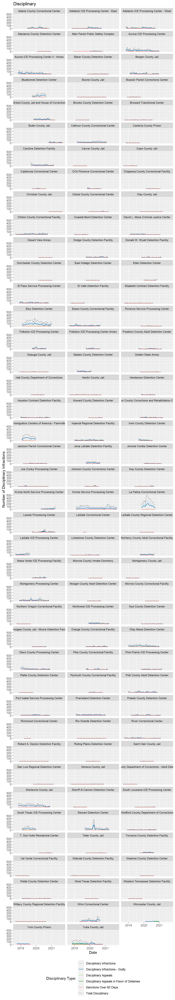
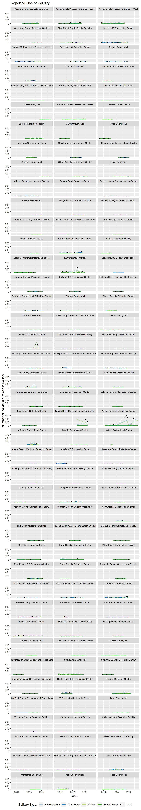
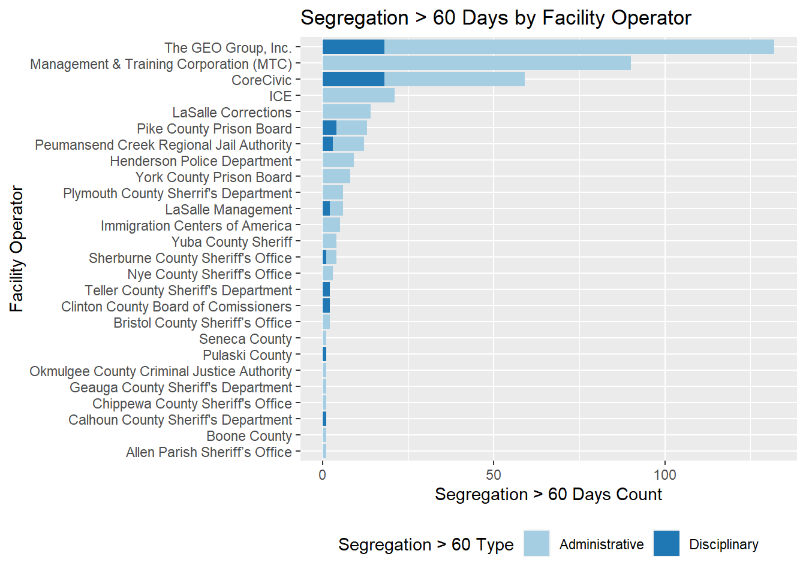
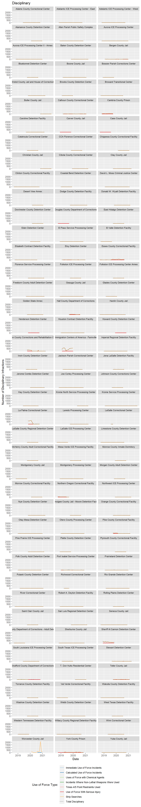

Preliminary Reading and Graphing of Inspection Data
Nathan Craig
Tuesday July 06, 2021
1 Purpose
This document is a preliminary proof of concept and initial exploratory data analysis (Tukey 1977). Goals of the document are to:
- illustrate the kinds of analysis possible with the tabulation of ICE inspection data
- provide preliminary exploratory plot of select variables from the Significant Incident Summary Sheets.
- generate some preliminary summary information
The data are presently incomplete and represent results compiled as of 2021-07-06.
# Load necessary libraries
# Reading and wrangling
library(googlesheets4)
library(readr)
library(tidyverse)
library(janitor)
library(lubridate)
library(DT)
# Plotting
library(ggplot2)
library(RColorBrewer)
# Tables
library(kableExtra)
# Load custom function
source("function_clean_facility_names.R", local = knitr::knit_global())2 Introduction
2.1 Method for Reading G-324A-19-inc form
The code for this report is specific to data logged in the G-324A-19 form and the incident summaries portion of that form. The incident summary portion of this form is probably the most complex data structure in the project and also contains the largest volume of quantitative information. Therefore, it seemed like a good place to start with an initial proof of concept.
At the outset, there were issues reading in the Google Sheet. Several of the numeric columns read into R as lists which was undesirable. In the Google Sheet, Craig set the columns to plain text rather than auto and the data are read into R as character columns. This seemed to resolve the issue for a time, and it was possible to use the type_convert() function from the readr library (Wickham and Hester 2020) to convert these columns to numbers. The col_types argument of the read_sheet function of the googlesheets4 library (Bryan 2021) was used to explicitly set the column types to character. After applying the clean_facility_names custom function, additional transformations like converting facility to a factor are applied.
There were some issues using lubridate (Spinu, Grolemund, and Wickham 2021) to wrangle the month and year fields to a proper date. Craig was not able to discern the cause of the issue. However, changing the month format on the incident sheet from abbreviated to fully written out months solved the issue. Those changes were made in the master Google Sheet and the data were called using the googlesheets4 library.
# Read in Sheet G-324A-19
df_324 <- read_sheet("https://docs.google.com/spreadsheets/d/1im5VSi3bIEi13O8WQ56wEIXSyNEstbGMylXXgD9bAG0/edit#gid=1858227071",
sheet="G-324A-19",
col_names = TRUE,
col_types = "c") %>%
clean_names() %>%
# Run custom cleaning function
clean_facility_names() %>%
# df specific changes
mutate(facility = as.factor(facility),
state = as.factor(state),
date = mdy(inspection_date),
current_inspection_date_from = mdy(current_inspection_date_from),
current_inspection_date_to = mdy(current_inspection_date_to)
) %>%
relocate(date, .before = inspection_date) %>%
mutate_at(c(20:49), as.numeric)# Read Google Sheet incident worksheet, convert to data frame, and wrangle
df_324_inc <- read_sheet("https://docs.google.com/spreadsheets/d/1im5VSi3bIEi13O8WQ56wEIXSyNEstbGMylXXgD9bAG0/edit#gid=1858227071",
sheet="G-324A-19-inc",
col_types = "c") %>%
clean_names() %>%
# Run custom cleaning function
clean_facility_names() %>%
# df_specific changes
unite(date, year:month) %>%
mutate(facility = as.factor(facility),
state = as.factor(state),
date = ym(date)
) %>%
mutate_at(c(6:76), as.numeric)At present 199 SIS and inspection cover letter combinations out of approximately 300 inspections are complete. The completed inspections range in time from 2019-08-22 to 2021-05-27. Students are now working on older SIS forms which are structured differently. The preliminary EDA below is restricted to the more current SIS forms which were first used in May 2019.
2.2 Summary Tables
Summary tables help to provide an overview of how many instances occur within particular category of data or how frequent a particular issue is recorded at a given facility. Summary tables are generated using a combination of group_by with summarize with the results piped to kable and kableExtra. This produces results similar to a “pivot table” from Excel.
Table 2.1 shows the number of inspections per facility that are processed so far. The values range from 1-3 inspections. Dorchester County Detention Center, Golden State Annex, and River Correctional Center all have three inspections.
df_facility <- df_324 %>%
group_by(facility) %>%
summarise(n_inspections = n()) %>%
ungroup()
df_facility %>%
kable(caption = "Inspections Reviewed by Facility",
col.names = c("Facility", "Inspections Reviewed")) %>%
kable_styling(c("hover", "striped", "condensed", "responsive")) %>%
scroll_box(height = "300px")| Facility | Inspections Reviewed |
|---|---|
| Adams County Correctional Center | 2 |
| Adelanto ICE Processing Center - East | 2 |
| Adelanto ICE Processing Center - West | 2 |
| Alamance County Detention Center | 1 |
| Alamance County Jail | 1 |
| Allen Parish Public Safety Complex | 2 |
| Aurora ICE Processing Center | 2 |
| Aurora ICE Processing Center II - Annex | 2 |
| Baker County Detention Center | 2 |
| Bergen County Jail | 2 |
| Bluebonnet Detention Center | 1 |
| Boone County Jail | 2 |
| Bossier Parish Corrections Center | 1 |
| Bristol County Jail and House of Correction | 2 |
| Brooks County Detention Center | 1 |
| Broward Transitional Center | 2 |
| Butler County Jail | 1 |
| Calhoun County Correctional Center | 2 |
| Cambria County Prison | 1 |
| Caroline Detention Facility | 2 |
| Carver County Jail | 1 |
| Cass County Jail | 1 |
| Catahoula Correctional Center | 2 |
| CCA Florence Correctional Center | 1 |
| Chase County Detention Center | 1 |
| Chippewa County Correctional Facility | 1 |
| Christian County Jail | 1 |
| Cibola County Correctional Center | 2 |
| Clay County Jail | 2 |
| Clinton County Correctional Facility | 2 |
| Coastal Bend Detention Center | 1 |
| David L. Moss Criminal Justice Center | 2 |
| Desert View Annex | 2 |
| Dodge County Detention Facility | 2 |
| Donald W. Wyatt Detention Facility | 2 |
| Dorchester County Detention Center | 3 |
| Douglas County Department of Corrections | 1 |
| East Hidalgo Detention Center | 1 |
| Eden Detention Center | 1 |
| El Paso Service Processing Center | 2 |
| El Valle Detention Facility | 1 |
| Elizabeth Contract Detention Facility | 2 |
| Eloy Detention Center | 2 |
| Essex County Correctional Facility | 2 |
| Etowah County Jail | 1 |
| Florence Service Processing Center | 2 |
| Folkston ICE Processing Center | 1 |
| Folkston ICE Processing Center Annex | 1 |
| Freeborn County Adult Detention Center | 2 |
| Geauga County Jail | 2 |
| Glades County Detention Center | 1 |
| Golden State Annex | 3 |
| Hall County Department of Corrections | 1 |
| Hardin County Jail | 2 |
| Henderson Detention Center | 1 |
| Houston Contract Detention Facility | 2 |
| Howard County Detention Center | 1 |
| Hudson County Corrections and Rehabilitation Center | 2 |
| Immigration Centers of America - Farmville | 1 |
| Imperial Regional Detention Facility | 2 |
| Irwin County Detention Center | 1 |
| Jackson Parish Correctional Center | 2 |
| Jena LaSalle Detention Facility | 1 |
| Jerome Combs Detention Center | 2 |
| Joe Corley Processing Center | 2 |
| Johnson County Corrections Center | 1 |
| Kay County Detention Center | 2 |
| Krome North Service Processing Center | 1 |
| Krome Service Processing Center | 2 |
| La Palma Correctional Center | 1 |
| Laredo Processing Center | 2 |
| LaSalle Correctional Center | 1 |
| LaSalle County Regional Detention Center | 1 |
| LaSalle ICE Processing Center | 1 |
| Limestone County Detention Center | 2 |
| McHenry County Adult Correctional Facility | 1 |
| Mesa Verde ICE Processing Facility | 1 |
| Monroe County Inmate Dormitory | 1 |
| Montgomery County Jail | 1 |
| Montgomery Processing Center | 2 |
| Morgan County Adult Detention Center | 1 |
| Morrow County Correctional Facility | 1 |
| Northern Oregon Correctional Facility | 1 |
| Northwest ICE Processing Center | 2 |
| Nye County Detention Center | 2 |
| Okmulgee County Jail - Moore Detention Facility | 1 |
| Orange County Correctional Facility | 2 |
| Otay Mesa Detention Center | 2 |
| Otero County Processing Center | 2 |
| Pike County Correctional Facility | 2 |
| Pine Prairie ICE Processing Center | 2 |
| Platte County Detention Center | 1 |
| Plymouth County Correctional Facility | 1 |
| Polk County Adult Detention Center | 2 |
| Port Isabel Service Processing Center | 2 |
| Prairieland Detention Center | 2 |
| Pulaski County Detention Center | 2 |
| Richwood Correctional Center | 2 |
| Rio Grande Detention Center | 2 |
| River Correctional Center | 3 |
| Robert A. Deyton Detention Facility | 2 |
| Rolling Plains Detention Center | 1 |
| Saint Clair County Jail | 1 |
| San Luis Regional Detention Center | 2 |
| Seneca County Jail | 2 |
| Shawnee County Department of Corrections - Adult Detention Center | 1 |
| Sherburne County Jail | 2 |
| Sheriff Al Cannon Detention Center | 1 |
| South Louisiana ICE Processing Center | 2 |
| South Texas ICE Processing Center | 1 |
| Stewart Detention Center | 2 |
| Strafford County Department of Corrections | 2 |
| T. Don Hutto Residential Center | 1 |
| Teller County Jail | 2 |
| Torrance County Detention Facility | 1 |
| Val Verde Correctional Facility | 1 |
| Wakulla County Detention Facility | 2 |
| Washoe County Detention Center | 1 |
| Webb County Detention Center | 2 |
| West Texas Detention Facility | 1 |
| Western Tennessee Detention Facility | 1 |
| Willacy County Regional Detention Facility | 2 |
| Winn Correctional Center | 2 |
| Worcester County Jail | 1 |
| York County Prison | 2 |
| Yuba County Jail | 2 |
2.3 Facet Plots
Facet plots partition each portion of a plot into a matrix of panels. These plots are produced for several categories of data where each panel represents a facility for a given variable reported in the SIS form. Within each category, columns are pivoted longer and plotted by date. Graphing is done using the ggplot2 library (Wickham et al. 2021) with the facet_wrap function to provide a means to compare multiple facilities simultaneously. Such a plot can help identify trends and guide more specific questions.
2.4 SIS Form structure
The ICE G-324A Significant Incident Summary contains information on the following categories of information:
3 Disciplinary
As a matter of law, ICE detention is not punitive it is purely administrative civil holding to ensure that individuals are present for their immigration proceedings. Despite that fact, there is a tremendous amount of punitive disciplinary measures that take place in ICE detention. Some of this information on discipline in ICE detention is logged in facility inspections. As seen in the tables below, during the current sample period there were more than 42,000 disciplinary infractions.
3.1 Summary Tables
df_discipline <- df_324_inc %>%
# Subset the df to only the used cols
select(id, facility, date,
disciplinary_infractions:
sanctions_over_60_days
) %>%
# Need the rowwise function to compute a row-at-a-time
# in the following mutate function
rowwise(id) %>%
# Create a new total column
mutate(total_disciplinary = sum(c_across(
disciplinary_infractions:
sanctions_over_60_days
))) %>%
# Call a range of table columns and pivot long
pivot_longer(.,
cols= disciplinary_infractions:total_disciplinary,
names_to = "disciplinary_type",
values_to = "disciplinary_count") %>%
# Remove NA values
drop_na() %>%
# Explicitly set factor levels
mutate(disciplinary_type = factor(disciplinary_type, levels =c(
"disciplinary_infractions",
"disciplinary_infractions_guilty",
"disciplinary_appeals",
"disciplinary_appeals_found_in_favor_of_detainee",
"sanctions_over_60_days",
"total_disciplinary"
)))df_discipline %>%
group_by(disciplinary_type) %>%
summarise(`Total Disciplinary by Type` = sum(disciplinary_count)) %>%
ungroup() %>%
kable(caption = "Total Disciplinary by Type",
col.names = c("Discipline Type", "Total Discipline Type")) %>%
kable_styling(c("hover", "striped", "condensed", "responsive"))| Discipline Type | Total Discipline Type |
|---|---|
| disciplinary_infractions | 25089 |
| disciplinary_infractions_guilty | 19610 |
| disciplinary_appeals | 1234 |
| disciplinary_appeals_found_in_favor_of_detainee | 295 |
| sanctions_over_60_days | 30 |
| total_disciplinary | 45547 |
df_discipline %>%
group_by(facility) %>%
summarise(total_disciplinary = sum(disciplinary_count)) %>%
arrange(desc(total_disciplinary)) %>%
ungroup() %>%
kable(caption = "Total Discipline by Facility",
col.names = c("Facility", "Total Discipline by Facility")) %>%
kable_styling(c("hover", "striped", "condensed", "responsive")) %>%
scroll_box(height = "300px")| Facility | Total Discipline by Facility |
|---|---|
| Eloy Detention Center | 7128 |
| La Palma Correctional Center | 6954 |
| Krome Service Processing Center | 4888 |
| Sherburne County Jail | 4070 |
| Immigration Centers of America - Farmville | 3808 |
| Yuba County Jail | 3712 |
| Stewart Detention Center | 3068 |
| Aurora ICE Processing Center | 2678 |
| Aurora ICE Processing Center II - Annex | 2678 |
| Otay Mesa Detention Center | 2504 |
| Winn Correctional Center | 2264 |
| Calhoun County Correctional Center | 2098 |
| Montgomery Processing Center | 2060 |
| Caroline Detention Facility | 1954 |
| Bluebonnet Detention Center | 1926 |
| Otero County Processing Center | 1924 |
| South Texas ICE Processing Center | 1912 |
| Prairieland Detention Center | 1596 |
| Bergen County Jail | 1432 |
| Essex County Correctional Facility | 1304 |
| Adelanto ICE Processing Center - West | 1284 |
| El Paso Service Processing Center | 1246 |
| Imperial Regional Detention Facility | 1240 |
| Jena LaSalle Detention Facility | 1234 |
| Bristol County Jail and House of Correction | 1186 |
| LaSalle ICE Processing Center | 1176 |
| Clinton County Correctional Facility | 1166 |
| Northwest ICE Processing Center | 1070 |
| Polk County Adult Detention Center | 1010 |
| River Correctional Center | 924 |
| Laredo Processing Center | 888 |
| Port Isabel Service Processing Center | 848 |
| Glades County Detention Center | 822 |
| Folkston ICE Processing Center | 814 |
| McHenry County Adult Correctional Facility | 796 |
| Adams County Correctional Center | 756 |
| Pulaski County Detention Center | 746 |
| Adelanto ICE Processing Center - East | 742 |
| Irwin County Detention Center | 680 |
| Pine Prairie ICE Processing Center | 638 |
| Hudson County Corrections and Rehabilitation Center | 592 |
| York County Prison | 586 |
| Butler County Jail | 566 |
| Pike County Correctional Facility | 560 |
| Folkston ICE Processing Center Annex | 502 |
| David L. Moss Criminal Justice Center | 498 |
| Dodge County Detention Facility | 496 |
| Freeborn County Adult Detention Center | 492 |
| Mesa Verde ICE Processing Facility | 482 |
| Houston Contract Detention Facility | 480 |
| Orange County Correctional Facility | 480 |
| Krome North Service Processing Center | 438 |
| Torrance County Detention Facility | 420 |
| Strafford County Department of Corrections | 400 |
| Webb County Detention Center | 322 |
| Baker County Detention Center | 312 |
| Florence Service Processing Center | 310 |
| Donald W. Wyatt Detention Facility | 262 |
| Plymouth County Correctional Facility | 252 |
| Jackson Parish Correctional Center | 234 |
| Eden Detention Center | 230 |
| Joe Corley Processing Center | 214 |
| Johnson County Corrections Center | 204 |
| CCA Florence Correctional Center | 186 |
| Limestone County Detention Center | 176 |
| Okmulgee County Jail - Moore Detention Facility | 176 |
| Jerome Combs Detention Center | 174 |
| Broward Transitional Center | 166 |
| Allen Parish Public Safety Complex | 158 |
| Elizabeth Contract Detention Facility | 152 |
| Kay County Detention Center | 144 |
| Henderson Detention Center | 136 |
| Hardin County Jail | 132 |
| Wakulla County Detention Facility | 128 |
| Worcester County Jail | 125 |
| El Valle Detention Facility | 124 |
| Nye County Detention Center | 112 |
| Catahoula Correctional Center | 88 |
| Geauga County Jail | 88 |
| Bossier Parish Corrections Center | 80 |
| Montgomery County Jail | 80 |
| Hall County Department of Corrections | 66 |
| Cambria County Prison | 64 |
| Seneca County Jail | 62 |
| Howard County Detention Center | 54 |
| Rio Grande Detention Center | 54 |
| Cibola County Correctional Center | 48 |
| Chippewa County Correctional Facility | 44 |
| Cass County Jail | 40 |
| Coastal Bend Detention Center | 40 |
| Golden State Annex | 40 |
| Morgan County Adult Detention Center | 40 |
| Washoe County Detention Center | 40 |
| Richwood Correctional Center | 28 |
| South Louisiana ICE Processing Center | 28 |
| Sheriff Al Cannon Detention Center | 24 |
| Carver County Jail | 22 |
| Saint Clair County Jail | 20 |
| Northern Oregon Correctional Facility | 18 |
| Shawnee County Department of Corrections - Adult Detention Center | 18 |
| Teller County Jail | 16 |
| Rolling Plains Detention Center | 12 |
| Christian County Jail | 8 |
| Monroe County Inmate Dormitory | 8 |
| San Luis Regional Detention Center | 8 |
| T. Don Hutto Residential Center | 8 |
| West Texas Detention Facility | 8 |
| Clay County Jail | 4 |
| Desert View Annex | 2 |
| Alamance County Detention Center | 0 |
| Boone County Jail | 0 |
| Brooks County Detention Center | 0 |
| Dorchester County Detention Center | 0 |
| East Hidalgo Detention Center | 0 |
| LaSalle Correctional Center | 0 |
| LaSalle County Regional Detention Center | 0 |
| Morrow County Correctional Facility | 0 |
| Platte County Detention Center | 0 |
| Robert A. Deyton Detention Facility | 0 |
| Val Verde Correctional Facility | 0 |
| Western Tennessee Detention Facility | 0 |
| Willacy County Regional Detention Facility | 0 |
3.2 Facet Plot of Disciplinary by Facility
# Generating a linetype vector for use in the plot
plot_lines <- c(
"solid",
"solid",
"solid",
"solid",
"solid",
"dotted"
)
# Use Color Brewer to set colors and modify
# the last color to be black for totals.
plot_colors <- brewer.pal(6, "Paired")
plot_colors[6] <- "#000000"
# Create plot labels
plot_labels <- c(
"Disciplinary Infractions",
"Disciplinary Infractions - Guilty",
"Disciplinary Appeals",
"Disciplinary Appeals in Favor of Detainee",
"Sanctions Over 60 Days",
"Total Disciplinary")
df_discipline %>%
# Calling the plot and formatting
ggplot(aes(x=date,
y = disciplinary_count,
linetype = disciplinary_type))+
geom_line(aes(color = disciplinary_type), size = .65) +
# Set the linetype
scale_linetype_manual(
values = plot_lines,
labels = plot_labels,
name = "Disciplinary Type:",
guide = guide_legend(nrow = 6)
)+
# Setting the color
scale_color_manual(
values = plot_colors,
labels = plot_labels,
name = "Disciplinary Type:"
)+
labs(title = "Disciplinary")+
ylab("Number of Disciplinary Infractions")+
xlab("Date")+
theme(
strip.text = element_text(size = 8),
legend.position = "bottom"
)+
# Set the legend to multiple rows
guides(col = guide_legend(nrow =6))+
# Wrap
facet_wrap(~ facility, ncol=3)
4 Solitary
4.1 Summary Tables
Of the present 163 inspections reviewed so far, there are more than 34,000 instances of solitary. That is roughly 208 instances of solitary per inspection.
df_solitary <- df_324_inc %>%
# Select a subset of columns to work with
select(id,
facility,
date,
detainees_placed_in_administrative_segregation:
detainees_placed_in_segregation_for_mental_health_reasons) %>%
# Need the rowwise function to compute a row-at-a-time
# in the following mutate function
rowwise(id) %>%
# Create new total column
mutate(total_segregation = sum(c_across(detainees_placed_in_administrative_segregation:
detainees_placed_in_segregation_for_mental_health_reasons))) %>%
# Tidy
pivot_longer(.,
cols= detainees_placed_in_administrative_segregation:
total_segregation,
names_to = "segregation_type",
values_to = "segregation_count") %>%
# Remove NA
drop_na() %>%
# Explicitly set factor levels
mutate(segregation_type = factor(segregation_type, levels = c(
"detainees_placed_in_administrative_segregation",
"detainees_placed_in_disciplinary_segregation",
"detainees_placed_in_segregation_for_medical_reasons",
"detainees_placed_in_segregation_for_mental_health_reasons",
"total_segregation"
)))df_solitary %>%
group_by(segregation_type) %>%
summarise(`Total Solitary by Type` = sum(segregation_count)) %>%
ungroup() %>%
kable(caption = "Total Solitary by Type",
col.names = c("Solitary Type", "Total Solitary Type")) %>%
kable_styling(c("hover", "striped", "condensed", "responsive"))| Solitary Type | Total Solitary Type |
|---|---|
| detainees_placed_in_administrative_segregation | 17236 |
| detainees_placed_in_disciplinary_segregation | 9551 |
| detainees_placed_in_segregation_for_medical_reasons | 9869 |
| detainees_placed_in_segregation_for_mental_health_reasons | 1003 |
| total_segregation | 37336 |
df_solitary %>%
group_by(facility) %>%
summarise(total_segregation = sum(segregation_count)) %>%
arrange(desc(total_segregation)) %>%
ungroup() %>%
kable(caption = "Total Solitary by Facility",
col.names = c("Facility", "Total Solitary by Facility")) %>%
kable_styling(c("hover", "striped", "condensed", "responsive")) %>%
scroll_box(height = "300px")| Facility | Total Solitary by Facility |
|---|---|
| Krome Service Processing Center | 10882 |
| Eloy Detention Center | 4556 |
| El Paso Service Processing Center | 3310 |
| Prairieland Detention Center | 2788 |
| Henderson Detention Center | 2638 |
| Krome North Service Processing Center | 2510 |
| Winn Correctional Center | 2474 |
| Caroline Detention Facility | 2438 |
| Otero County Processing Center | 2332 |
| La Palma Correctional Center | 2198 |
| Adelanto ICE Processing Center - West | 2178 |
| Irwin County Detention Center | 2172 |
| River Correctional Center | 1898 |
| Stewart Detention Center | 1814 |
| South Texas ICE Processing Center | 1696 |
| Adams County Correctional Center | 1456 |
| York County Prison | 1418 |
| Montgomery Processing Center | 1324 |
| Adelanto ICE Processing Center - East | 1308 |
| Otay Mesa Detention Center | 1266 |
| Jackson Parish Correctional Center | 1248 |
| Aurora ICE Processing Center | 1138 |
| Aurora ICE Processing Center II - Annex | 1138 |
| Northwest ICE Processing Center | 1028 |
| Immigration Centers of America - Farmville | 1006 |
| Imperial Regional Detention Facility | 1006 |
| Glades County Detention Center | 974 |
| Port Isabel Service Processing Center | 932 |
| LaSalle ICE Processing Center | 928 |
| Sherburne County Jail | 796 |
| Pulaski County Detention Center | 688 |
| Catahoula Correctional Center | 662 |
| Pike County Correctional Facility | 606 |
| Jena LaSalle Detention Facility | 602 |
| Pine Prairie ICE Processing Center | 554 |
| Baker County Detention Center | 468 |
| McHenry County Adult Correctional Facility | 462 |
| Bluebonnet Detention Center | 452 |
| Florence Service Processing Center | 388 |
| Bergen County Jail | 372 |
| Houston Contract Detention Facility | 372 |
| Bristol County Jail and House of Correction | 360 |
| Wakulla County Detention Facility | 342 |
| Polk County Adult Detention Center | 296 |
| Calhoun County Correctional Center | 274 |
| Freeborn County Adult Detention Center | 256 |
| Richwood Correctional Center | 256 |
| Yuba County Jail | 224 |
| Hudson County Corrections and Rehabilitation Center | 220 |
| Essex County Correctional Facility | 213 |
| Limestone County Detention Center | 206 |
| Clinton County Correctional Facility | 196 |
| Donald W. Wyatt Detention Facility | 194 |
| Plymouth County Correctional Facility | 176 |
| El Valle Detention Facility | 172 |
| Dodge County Detention Facility | 162 |
| Geauga County Jail | 150 |
| Allen Parish Public Safety Complex | 142 |
| LaSalle Correctional Center | 140 |
| Okmulgee County Jail - Moore Detention Facility | 140 |
| Johnson County Corrections Center | 136 |
| Saint Clair County Jail | 134 |
| Elizabeth Contract Detention Facility | 132 |
| Folkston ICE Processing Center | 126 |
| Jerome Combs Detention Center | 124 |
| Joe Corley Processing Center | 120 |
| Nye County Detention Center | 120 |
| Mesa Verde ICE Processing Facility | 108 |
| Seneca County Jail | 102 |
| Kay County Detention Center | 92 |
| Worcester County Jail | 82 |
| Eden Detention Center | 78 |
| Clay County Jail | 76 |
| Butler County Jail | 72 |
| Torrance County Detention Facility | 58 |
| Hardin County Jail | 56 |
| Bossier Parish Corrections Center | 54 |
| Webb County Detention Center | 54 |
| Chippewa County Correctional Facility | 50 |
| David L. Moss Criminal Justice Center | 46 |
| Cambria County Prison | 44 |
| Montgomery County Jail | 42 |
| Strafford County Department of Corrections | 42 |
| Washoe County Detention Center | 42 |
| Hall County Department of Corrections | 40 |
| Rio Grande Detention Center | 36 |
| CCA Florence Correctional Center | 34 |
| Cibola County Correctional Center | 32 |
| Boone County Jail | 28 |
| Golden State Annex | 26 |
| Folkston ICE Processing Center Annex | 24 |
| Desert View Annex | 22 |
| Laredo Processing Center | 22 |
| Cass County Jail | 20 |
| Morgan County Adult Detention Center | 20 |
| Alamance County Detention Center | 16 |
| Teller County Jail | 16 |
| Northern Oregon Correctional Facility | 14 |
| Sheriff Al Cannon Detention Center | 14 |
| Carver County Jail | 10 |
| Howard County Detention Center | 10 |
| Orange County Correctional Facility | 8 |
| Shawnee County Department of Corrections - Adult Detention Center | 6 |
| Christian County Jail | 4 |
| Rolling Plains Detention Center | 4 |
| San Luis Regional Detention Center | 4 |
| Brooks County Detention Center | 0 |
| Broward Transitional Center | 0 |
| Coastal Bend Detention Center | 0 |
| Dorchester County Detention Center | 0 |
| Douglas County Department of Corrections | 0 |
| East Hidalgo Detention Center | 0 |
| LaSalle County Regional Detention Center | 0 |
| Monroe County Inmate Dormitory | 0 |
| Morrow County Correctional Facility | 0 |
| Platte County Detention Center | 0 |
| Robert A. Deyton Detention Facility | 0 |
| South Louisiana ICE Processing Center | 0 |
| T. Don Hutto Residential Center | 0 |
| Val Verde Correctional Facility | 0 |
| West Texas Detention Facility | 0 |
| Western Tennessee Detention Facility | 0 |
| Willacy County Regional Detention Facility | 0 |
4.2 Facet Plots of Solitary by Facility
# Generating a linetype vector for use in the plot
plot_lines <- c(
"solid",
"solid",
"solid",
"solid",
"dotted"
)
# Use Color Brewer to set colors and modify
# the last color to be black for totals.
plot_colors <- brewer.pal(5, "Paired")
plot_colors[5] <- "#000000"
# Create plot labels
plot_labels <- c(
"Administrative",
"Disciplinary",
"Medical",
"Mental Health",
"Total")
df_solitary %>%
# Calling the plot and formatting
ggplot(aes(x=date,
y = segregation_count,
linetype = segregation_type))+
geom_line(aes(color = segregation_type), size = .65) +
# Set the color
scale_color_manual(
values = plot_colors,
name = "Solitary Type:",
labels = plot_labels)+
# Set the linetype
scale_linetype_manual(
values = plot_lines,
name = "Solitary Type:",
labels = plot_labels)+
labs(title = "Reported Use of Solitary")+
ylab("Number of Individuals Palced in Solitary")+
xlab("Date")+
theme(
strip.text = element_text(size = 8),
legend.position = "bottom"
)+
facet_wrap(~ facility, ncol=3)
4.3 Solitary Over 60 Days
# Use Color Brewer to set colors and modify
# the last color to be black for totals.
plot_colors <- brewer.pal(5, "Paired")
plot_colors[5] <- "#000000"
# Call the dataframe and select cols
df_324 %>%
select(id,
facility,
state,
date,
fac_operator,
admin_seg_60_ice,
disc_seg_60_ice) %>%
drop_na() %>%
# Need the rowwise function to compute a row-at-a-time
# in the following mutate function
rowwise(id) %>%
# Generate total col
mutate(total_seg_60 = sum(c_across(
admin_seg_60_ice:
disc_seg_60_ice
))) %>%
# Make tidy and filter
pivot_longer(cols = admin_seg_60_ice:disc_seg_60_ice,
names_to = "segregation_60_type",
values_to = "segregation_60_count") %>%
filter(segregation_60_type %in% c("admin_seg_60_ice", "disc_seg_60_ice")&
segregation_60_count > 0) %>%
# Initiate the plot and sort by sum
ggplot(aes(x = segregation_60_count,
y=reorder(fac_operator, segregation_60_count, sum),
fill=segregation_60_type))+
geom_bar(stat = "identity")+
# Set the color fill
scale_fill_brewer(type = "qual",
palette = "Paired",
name = "Segregation > 60 Type",
labels = c("Administrative",
"Disciplinary"))+
labs(title= "Segregation > 60 Days by Facility Operator",
x = "Segregation > 60 Days Count",
y = "Facility Operator")+
theme(legend.position = "bottom")
5 Use of Force
5.1 Summary Tables
df_force <- df_324_inc %>%
# Subset the df to only the used cols
select(id, facility, date,
immediate_use_of_force_incidents:
strip_searches
) %>%
# Need the rowwise function to compute a row-at-a-time
# in the following mutate function
rowwise(id) %>%
# Create a new total column
mutate(total_use_of_force = sum(c_across(
immediate_use_of_force_incidents:
strip_searches
))) %>%
# Call a range of table columns and pivot long
pivot_longer(.,
cols= immediate_use_of_force_incidents:total_use_of_force,
names_to = "use_of_force_type",
values_to = "use_of_force_count") %>%
# Remove NA values
drop_na() %>%
# Explicitly define factors
mutate(use_of_force_type = factor(use_of_force_type, levels = c(
"immediate_use_of_force_incidents",
"calculated_use_of_force_incidents",
"uses_of_force_with_chemical_agents",
"incidents_where_non_lethal_weapons_were_used",
"number_of_times_4_5_point_restraints_were_used",
"use_of_force_with_serious_injury",
"strip_searches",
"total_use_of_force"
)))df_force %>%
group_by(use_of_force_type) %>%
summarise(`Total Use of Force by Type` = sum(use_of_force_count)) %>%
ungroup() %>%
kable(caption = "Total Use of Force by Type",
col.names = c("Use of Force Type", "Total Use of Force Type")) %>%
kable_styling(c("hover", "striped", "condensed", "responsive"))| Use of Force Type | Total Use of Force Type |
|---|---|
| immediate_use_of_force_incidents | 1184 |
| calculated_use_of_force_incidents | 325 |
| uses_of_force_with_chemical_agents | 362 |
| incidents_where_non_lethal_weapons_were_used | 18 |
| number_of_times_4_5_point_restraints_were_used | 97 |
| use_of_force_with_serious_injury | 2 |
| strip_searches | 20629 |
| total_use_of_force | 19170 |
df_force %>%
group_by(facility) %>%
summarise(total_use_of_force = sum(use_of_force_count)) %>%
arrange(desc(total_use_of_force)) %>%
ungroup() %>%
kable(caption = "Total Use of Force by Facility",
col.names = c("Facility", "Total Use of Force by Facility")) %>%
kable_styling(c("hover", "striped", "condensed", "responsive")) %>%
scroll_box(height = "300px")| Facility | Total Use of Force by Facility |
|---|---|
| Immigration Centers of America - Farmville | 10782 |
| La Palma Correctional Center | 6022 |
| Sheriff Al Cannon Detention Center | 4854 |
| Worcester County Jail | 3348 |
| Essex County Correctional Facility | 2620 |
| Hudson County Corrections and Rehabilitation Center | 2294 |
| York County Prison | 2017 |
| Cambria County Prison | 1500 |
| Pike County Correctional Facility | 1120 |
| Hall County Department of Corrections | 916 |
| Teller County Jail | 876 |
| Northern Oregon Correctional Facility | 862 |
| Eloy Detention Center | 496 |
| Bergen County Jail | 294 |
| Calhoun County Correctional Center | 282 |
| South Texas ICE Processing Center | 254 |
| Port Isabel Service Processing Center | 234 |
| Stewart Detention Center | 174 |
| Adelanto ICE Processing Center - West | 164 |
| Sherburne County Jail | 150 |
| Northwest ICE Processing Center | 138 |
| Bristol County Jail and House of Correction | 130 |
| Glades County Detention Center | 126 |
| Folkston ICE Processing Center | 122 |
| Otay Mesa Detention Center | 120 |
| Montgomery Processing Center | 116 |
| LaSalle ICE Processing Center | 112 |
| Baker County Detention Center | 92 |
| Krome Service Processing Center | 80 |
| Aurora ICE Processing Center | 66 |
| Aurora ICE Processing Center II - Annex | 66 |
| El Paso Service Processing Center | 66 |
| Jena LaSalle Detention Facility | 66 |
| River Correctional Center | 66 |
| Mesa Verde ICE Processing Facility | 60 |
| Pine Prairie ICE Processing Center | 56 |
| Donald W. Wyatt Detention Facility | 54 |
| Wakulla County Detention Facility | 54 |
| McHenry County Adult Correctional Facility | 46 |
| Irwin County Detention Center | 42 |
| Pulaski County Detention Center | 42 |
| Limestone County Detention Center | 40 |
| Prairieland Detention Center | 40 |
| Imperial Regional Detention Facility | 38 |
| Winn Correctional Center | 36 |
| Strafford County Department of Corrections | 33 |
| Bluebonnet Detention Center | 32 |
| Caroline Detention Facility | 32 |
| Johnson County Corrections Center | 28 |
| Adelanto ICE Processing Center - East | 26 |
| Jackson Parish Correctional Center | 26 |
| Boone County Jail | 24 |
| Houston Contract Detention Facility | 24 |
| Okmulgee County Jail - Moore Detention Facility | 24 |
| Morrow County Correctional Facility | 22 |
| Catahoula Correctional Center | 20 |
| Polk County Adult Detention Center | 20 |
| Dodge County Detention Facility | 18 |
| Orange County Correctional Facility | 18 |
| Otero County Processing Center | 18 |
| Yuba County Jail | 18 |
| CCA Florence Correctional Center | 16 |
| Plymouth County Correctional Facility | 16 |
| Shawnee County Department of Corrections - Adult Detention Center | 16 |
| Torrance County Detention Facility | 16 |
| Butler County Jail | 14 |
| Adams County Correctional Center | 12 |
| David L. Moss Criminal Justice Center | 12 |
| Eden Detention Center | 12 |
| Elizabeth Contract Detention Facility | 12 |
| Joe Corley Processing Center | 12 |
| Webb County Detention Center | 12 |
| Bossier Parish Corrections Center | 10 |
| Freeborn County Adult Detention Center | 10 |
| Krome North Service Processing Center | 10 |
| Broward Transitional Center | 8 |
| Clinton County Correctional Facility | 8 |
| Nye County Detention Center | 8 |
| Rio Grande Detention Center | 8 |
| Clay County Jail | 6 |
| Richwood Correctional Center | 6 |
| Val Verde Correctional Facility | 6 |
| Florence Service Processing Center | 4 |
| Folkston ICE Processing Center Annex | 4 |
| Hardin County Jail | 4 |
| Henderson Detention Center | 4 |
| Morgan County Adult Detention Center | 4 |
| Seneca County Jail | 4 |
| South Louisiana ICE Processing Center | 4 |
| Allen Parish Public Safety Complex | 2 |
| El Valle Detention Facility | 2 |
| Geauga County Jail | 2 |
| Howard County Detention Center | 2 |
| Kay County Detention Center | 2 |
| Rolling Plains Detention Center | 2 |
| Cass County Jail | 1 |
| Alamance County Detention Center | 0 |
| Brooks County Detention Center | 0 |
| Carver County Jail | 0 |
| Chippewa County Correctional Facility | 0 |
| Christian County Jail | 0 |
| Cibola County Correctional Center | 0 |
| Coastal Bend Detention Center | 0 |
| Desert View Annex | 0 |
| Dorchester County Detention Center | 0 |
| Douglas County Department of Corrections | 0 |
| East Hidalgo Detention Center | 0 |
| Golden State Annex | 0 |
| Jerome Combs Detention Center | 0 |
| Laredo Processing Center | 0 |
| LaSalle Correctional Center | 0 |
| LaSalle County Regional Detention Center | 0 |
| Monroe County Inmate Dormitory | 0 |
| Montgomery County Jail | 0 |
| Platte County Detention Center | 0 |
| Robert A. Deyton Detention Facility | 0 |
| Saint Clair County Jail | 0 |
| San Luis Regional Detention Center | 0 |
| T. Don Hutto Residential Center | 0 |
| Washoe County Detention Center | 0 |
| West Texas Detention Facility | 0 |
| Western Tennessee Detention Facility | 0 |
| Willacy County Regional Detention Facility | 0 |
5.2 Facet Plot of Use of Force by Facility
# Generating a linetype vector for use in the plot
plot_lines <- c(
"solid",
"solid",
"solid",
"solid",
"solid",
"solid",
"solid",
"dotted"
)
# Use Color Brewer to set colors and modify
# the last color to be black for totals.
plot_colors <- brewer.pal(8, "Paired")
plot_colors[8] <- "#000000"
# Create plot labels
plot_labels <- c(
"Immediate Use of Force Incidents",
"Calculated Use of Force Incidents",
"Uses of Force with Chemical Agents",
"Incidents Where Non-Lethal Weapons Were Used",
"Times 4/5 Point Restraints Used",
"Use of Force With Serious Injury",
"Strip Searches",
"Total Disciplinary")
df_force %>%
# Calling the plot and formatting
ggplot(aes(x=date, y = use_of_force_count, linetype=use_of_force_type))+
geom_line(aes(color = use_of_force_type), size = .65) +
# setting the linetype
scale_linetype_manual(
values = plot_lines,
labels = plot_labels,
name = "Use of Force Type:",
guide = guide_legend(nrow = 8)
)+
# Setting the color
scale_color_manual(
values = plot_colors,
labels = plot_labels,
name = "Use of Force Type:",
)+
labs(title = "Disciplinary")+
ylab("Number of Disciplinary Infractions")+
xlab("Date")+
theme(
strip.text = element_text(size = 8),
legend.position = "bottom"
)+
# Set the legend to multiple rows
guides(col = guide_legend(nrow =8))+
# Wrap
facet_wrap(~ facility, ncol=3)
6 Sexual Abuse and Assault
6.1 Allegations
6.1.1 Summary Tables
df_sex_alleg <- df_324_inc %>%
# Subset the df to only the used cols
select(id, facility, date,
sexual_abuse_allegations_detainee_on_detainee:
sexual_abuse_allegations_detainee_on_staff_contractor_volunteer_29
) %>%
# Need the rowwise function to compute a row-at-a-time
# in the following mutate function
rowwise(id) %>%
# Create a new total column
mutate(total_sexual_abuse_allegations = sum(c_across(
sexual_abuse_allegations_detainee_on_detainee:
sexual_abuse_allegations_detainee_on_staff_contractor_volunteer_29
))) %>%
# Call a range of table columns and pivot long
pivot_longer(.,
cols= sexual_abuse_allegations_detainee_on_detainee:total_sexual_abuse_allegations,
names_to = "sexual_abuse_allegations_type",
values_to = "sexual_abuse_allegations_count") %>%
# Remove NA
drop_na() %>%
# Explicitly define factor levels
mutate(sexual_abuse_allegations_type = factor(sexual_abuse_allegations_type, levels = c(
"sexual_abuse_allegations_detainee_on_detainee",
"sexual_abuse_allegations_inmate_on_detainee",
"sexual_abuse_allegations_detainee_on_inmate",
"sexual_abuse_allegations_detainee_on_staff_contractor_volunteer",
"sexual_abuse_allegations_detainee_on_staff_contractor_volunteer_29",
"total_sexual_abuse_allegations"
)))df_sex_alleg %>%
group_by(sexual_abuse_allegations_type) %>%
summarise(`Sexual Abuse and Assault Allegations by Type` = sum(sexual_abuse_allegations_count)) %>%
ungroup() %>%
kable(caption = "Total Sexual Abuse and Assault Allegations by Type",
col.names = c("Allegation Type", "Total Allegation Type")) %>%
kable_styling(c("hover", "striped", "condensed", "responsive"))| Allegation Type | Total Allegation Type |
|---|---|
| sexual_abuse_allegations_detainee_on_detainee | 495 |
| sexual_abuse_allegations_inmate_on_detainee | 32 |
| sexual_abuse_allegations_detainee_on_inmate | 15 |
| sexual_abuse_allegations_detainee_on_staff_contractor_volunteer | 189 |
| sexual_abuse_allegations_detainee_on_staff_contractor_volunteer_29 | 17 |
| total_sexual_abuse_allegations | 744 |
df_sex_alleg %>%
group_by(facility) %>%
summarise(total_sexual_abuse_allegations = sum(sexual_abuse_allegations_count)) %>%
arrange(desc(total_sexual_abuse_allegations)) %>%
ungroup() %>%
kable(caption = "Total Sexual Abuse and Assault Allegations by Facility",
col.names = c("Facility", "Total Allegations by Facility")) %>%
kable_styling(c("hover", "striped", "condensed", "responsive")) %>%
scroll_box(height = "300px")| Facility | Total Allegations by Facility |
|---|---|
| Otay Mesa Detention Center | 160 |
| Eloy Detention Center | 122 |
| Adelanto ICE Processing Center - West | 102 |
| Krome Service Processing Center | 70 |
| El Paso Service Processing Center | 66 |
| York County Prison | 58 |
| Montgomery Processing Center | 44 |
| South Texas ICE Processing Center | 44 |
| Northwest ICE Processing Center | 36 |
| Western Tennessee Detention Facility | 36 |
| Imperial Regional Detention Facility | 32 |
| Essex County Correctional Facility | 24 |
| Irwin County Detention Center | 24 |
| Adelanto ICE Processing Center - East | 22 |
| Bluebonnet Detention Center | 22 |
| Dodge County Detention Facility | 22 |
| Jackson Parish Correctional Center | 22 |
| LaSalle ICE Processing Center | 22 |
| Otero County Processing Center | 22 |
| Webb County Detention Center | 22 |
| Folkston ICE Processing Center | 20 |
| Caroline Detention Facility | 18 |
| Clinton County Correctional Facility | 18 |
| Yuba County Jail | 18 |
| Aurora ICE Processing Center | 16 |
| Aurora ICE Processing Center II - Annex | 16 |
| Calhoun County Correctional Center | 16 |
| CCA Florence Correctional Center | 16 |
| Hardin County Jail | 16 |
| Port Isabel Service Processing Center | 16 |
| Glades County Detention Center | 14 |
| Jena LaSalle Detention Facility | 14 |
| Okmulgee County Jail - Moore Detention Facility | 14 |
| Stewart Detention Center | 14 |
| Bergen County Jail | 12 |
| Eden Detention Center | 12 |
| Houston Contract Detention Facility | 12 |
| La Palma Correctional Center | 12 |
| Mesa Verde ICE Processing Facility | 12 |
| Prairieland Detention Center | 12 |
| Winn Correctional Center | 12 |
| Broward Transitional Center | 8 |
| Geauga County Jail | 8 |
| Joe Corley Processing Center | 8 |
| Limestone County Detention Center | 8 |
| Nye County Detention Center | 8 |
| Pine Prairie ICE Processing Center | 8 |
| Rio Grande Detention Center | 8 |
| River Correctional Center | 8 |
| Sherburne County Jail | 8 |
| Strafford County Department of Corrections | 8 |
| Baker County Detention Center | 6 |
| Florence Service Processing Center | 6 |
| Northern Oregon Correctional Facility | 6 |
| Torrance County Detention Facility | 6 |
| Adams County Correctional Center | 4 |
| Bristol County Jail and House of Correction | 4 |
| David L. Moss Criminal Justice Center | 4 |
| El Valle Detention Facility | 4 |
| Folkston ICE Processing Center Annex | 4 |
| Hall County Department of Corrections | 4 |
| Henderson Detention Center | 4 |
| Hudson County Corrections and Rehabilitation Center | 4 |
| Laredo Processing Center | 4 |
| McHenry County Adult Correctional Facility | 4 |
| Morgan County Adult Detention Center | 4 |
| Plymouth County Correctional Facility | 4 |
| Seneca County Jail | 4 |
| Val Verde Correctional Facility | 4 |
| Wakulla County Detention Facility | 4 |
| Bossier Parish Corrections Center | 2 |
| Cass County Jail | 2 |
| Chippewa County Correctional Facility | 2 |
| Cibola County Correctional Center | 2 |
| Clay County Jail | 2 |
| Dorchester County Detention Center | 2 |
| Elizabeth Contract Detention Facility | 2 |
| Freeborn County Adult Detention Center | 2 |
| Immigration Centers of America - Farmville | 2 |
| Kay County Detention Center | 2 |
| Krome North Service Processing Center | 2 |
| Monroe County Inmate Dormitory | 2 |
| Montgomery County Jail | 2 |
| Orange County Correctional Facility | 2 |
| Pike County Correctional Facility | 2 |
| Pulaski County Detention Center | 2 |
| Richwood Correctional Center | 2 |
| Rolling Plains Detention Center | 2 |
| Shawnee County Department of Corrections - Adult Detention Center | 2 |
| Sheriff Al Cannon Detention Center | 2 |
| South Louisiana ICE Processing Center | 2 |
| West Texas Detention Facility | 2 |
| Worcester County Jail | 2 |
| Alamance County Detention Center | 0 |
| Allen Parish Public Safety Complex | 0 |
| Boone County Jail | 0 |
| Brooks County Detention Center | 0 |
| Butler County Jail | 0 |
| Cambria County Prison | 0 |
| Carver County Jail | 0 |
| Catahoula Correctional Center | 0 |
| Christian County Jail | 0 |
| Coastal Bend Detention Center | 0 |
| Desert View Annex | 0 |
| Donald W. Wyatt Detention Facility | 0 |
| Douglas County Department of Corrections | 0 |
| East Hidalgo Detention Center | 0 |
| Golden State Annex | 0 |
| Howard County Detention Center | 0 |
| Jerome Combs Detention Center | 0 |
| Johnson County Corrections Center | 0 |
| LaSalle Correctional Center | 0 |
| LaSalle County Regional Detention Center | 0 |
| Morrow County Correctional Facility | 0 |
| Platte County Detention Center | 0 |
| Polk County Adult Detention Center | 0 |
| Robert A. Deyton Detention Facility | 0 |
| Saint Clair County Jail | 0 |
| San Luis Regional Detention Center | 0 |
| T. Don Hutto Residential Center | 0 |
| Teller County Jail | 0 |
| Washoe County Detention Center | 0 |
| Willacy County Regional Detention Facility | 0 |
6.1.2 Facet Plot of Sexual Abuse and Assault Allegations by Facility
# Generating a linetype vector for use in the plot
plot_lines <- c(
"solid",
"solid",
"solid",
"solid",
"solid",
"dotted"
)
# Use Color Brewer to set colors and modify
# the last color to be black for totals.
plot_colors <- brewer.pal(6, "Paired")
plot_colors[6] <- "#000000"
# Create plot labels
plot_labels <- c(
"Sexual Abuse Allegations - Detainee on Detainee",
"Sexual Abuse Allegations - Inmate on Detainee",
"Sexual Abuse Allegations - Detainee on Inmate",
"Sexual Abuse Allegations - Staff/Contractor/Volunteer on Detainee",
"Number of Sexual Abuse Allegations - Detainee on Staff/Contractor/Volunteer",
"Total Sexual Abuse Allegations")
df_sex_alleg %>%
# Calling the plot and formatting
ggplot(aes(x=date, y = sexual_abuse_allegations_count, linetype=sexual_abuse_allegations_type))+
geom_line(aes(color = sexual_abuse_allegations_type),size=.65) +
# Set the linetype
scale_linetype_manual(
values = plot_lines,
labels = plot_labels,
name = "Sexual Abuse Allegation Type:",
guide = guide_legend(nrow = 6)
)+
# Set the color
scale_color_manual(values = plot_colors,
labels = plot_labels,
name = "Sexual Abuse Allegation Type:")+
labs(title = "Sexual Abuse Allegations")+
ylab("Number of Allegations")+
xlab("Date")+
theme(
strip.text = element_text(size = 8),
legend.position = "bottom"
)+
# Set the legend to multiple rows
guides(col = guide_legend(nrow =8))+
# Wrap
facet_wrap(~ facility, ncol=3)
6.2 Substantiated Allegations
6.2.1 Summary Tables
df_sex_alleg_sub <- df_324_inc %>%
# Subset the df to only the used cols
select(id, facility, date,
sexual_abuse_allegations_detainee_on_detainee_2:
sexual_abuse_allegations_detainee_on_staff_contractor_volunteer_34
) %>%
# Need the rowwise function to compute a row-at-a-time
# in the following mutate function
rowwise(id) %>%
# Create a new total column
mutate(total_sexual_abuse_allegations = sum(c_across(
sexual_abuse_allegations_detainee_on_detainee_2:
sexual_abuse_allegations_detainee_on_staff_contractor_volunteer_34
))) %>%
# Call a range of table columns and pivot long
pivot_longer(.,
cols= sexual_abuse_allegations_detainee_on_detainee_2:total_sexual_abuse_allegations,
names_to = "sexual_abuse_substantiated_type",
values_to = "sexual_abuse_substantiated_count") %>%
# Remove NA values
drop_na() %>%
# Explicitly set factor levels
mutate(sexual_abuse_substantiated_type= factor(sexual_abuse_substantiated_type, levels =c(
"sexual_abuse_allegations_detainee_on_detainee_2",
"sexual_abuse_allegations_inmate_on_detainee_2",
"sexual_abuse_allegations_detainee_on_inmate_2",
"sexual_abuse_allegations_staff_contractor_volunteer_on_detainee",
"sexual_abuse_allegations_detainee_on_staff_contractor_volunteer_34",
"total_sexual_abuse_allegations"
)))df_sex_alleg_sub %>%
group_by(sexual_abuse_substantiated_type) %>%
summarise(`Sexual Abuse and Assault Allegations Substantiated by Type` = sum(sexual_abuse_substantiated_count)) %>%
ungroup() %>%
kable(caption = "Total Substantiated Sexual Abuse and Assault Allegations by Type",
col.names = c("Substantiated Allegation Type", "Total Substantiated Allegation Type")) %>%
kable_styling(c("hover", "striped", "condensed", "responsive"))| Substantiated Allegation Type | Total Substantiated Allegation Type |
|---|---|
| sexual_abuse_allegations_detainee_on_detainee_2 | 82 |
| sexual_abuse_allegations_inmate_on_detainee_2 | 10 |
| sexual_abuse_allegations_detainee_on_inmate_2 | 3 |
| sexual_abuse_allegations_staff_contractor_volunteer_on_detainee | 6 |
| sexual_abuse_allegations_detainee_on_staff_contractor_volunteer_34 | 1 |
| total_sexual_abuse_allegations | 102 |
df_sex_alleg_sub %>%
group_by(facility) %>%
summarise(total_sexual_abuse_substantiated = sum(sexual_abuse_substantiated_count)) %>%
arrange(desc(total_sexual_abuse_substantiated)) %>%
ungroup() %>%
kable(caption = "Total Substantiated Sexual Abuse and Assault Allegations by Facility",
col.names = c("Facility", "Total Substantiated Allegations by Facility")) %>%
kable_styling(c("hover", "striped", "condensed", "responsive")) %>%
scroll_box(height = "300px")| Facility | Total Substantiated Allegations by Facility |
|---|---|
| Otay Mesa Detention Center | 40 |
| Eloy Detention Center | 34 |
| Krome Service Processing Center | 26 |
| York County Prison | 18 |
| Geauga County Jail | 8 |
| Folkston ICE Processing Center | 6 |
| Irwin County Detention Center | 6 |
| Webb County Detention Center | 6 |
| CCA Florence Correctional Center | 4 |
| Clay County Jail | 4 |
| Morgan County Adult Detention Center | 4 |
| Otero County Processing Center | 4 |
| Stewart Detention Center | 4 |
| Yuba County Jail | 4 |
| Baker County Detention Center | 2 |
| Bergen County Jail | 2 |
| Bluebonnet Detention Center | 2 |
| Chippewa County Correctional Facility | 2 |
| Dodge County Detention Facility | 2 |
| El Paso Service Processing Center | 2 |
| El Valle Detention Facility | 2 |
| Essex County Correctional Facility | 2 |
| Hardin County Jail | 2 |
| Joe Corley Processing Center | 2 |
| La Palma Correctional Center | 2 |
| LaSalle ICE Processing Center | 2 |
| Mesa Verde ICE Processing Facility | 2 |
| Monroe County Inmate Dormitory | 2 |
| Northern Oregon Correctional Facility | 2 |
| Okmulgee County Jail - Moore Detention Facility | 2 |
| Torrance County Detention Facility | 2 |
| Winn Correctional Center | 2 |
| Adams County Correctional Center | 0 |
| Adelanto ICE Processing Center - East | 0 |
| Adelanto ICE Processing Center - West | 0 |
| Alamance County Detention Center | 0 |
| Allen Parish Public Safety Complex | 0 |
| Aurora ICE Processing Center | 0 |
| Aurora ICE Processing Center II - Annex | 0 |
| Boone County Jail | 0 |
| Bossier Parish Corrections Center | 0 |
| Bristol County Jail and House of Correction | 0 |
| Brooks County Detention Center | 0 |
| Broward Transitional Center | 0 |
| Butler County Jail | 0 |
| Calhoun County Correctional Center | 0 |
| Cambria County Prison | 0 |
| Caroline Detention Facility | 0 |
| Carver County Jail | 0 |
| Cass County Jail | 0 |
| Catahoula Correctional Center | 0 |
| Christian County Jail | 0 |
| Cibola County Correctional Center | 0 |
| Clinton County Correctional Facility | 0 |
| Coastal Bend Detention Center | 0 |
| David L. Moss Criminal Justice Center | 0 |
| Desert View Annex | 0 |
| Donald W. Wyatt Detention Facility | 0 |
| Dorchester County Detention Center | 0 |
| Douglas County Department of Corrections | 0 |
| East Hidalgo Detention Center | 0 |
| Eden Detention Center | 0 |
| Elizabeth Contract Detention Facility | 0 |
| Florence Service Processing Center | 0 |
| Folkston ICE Processing Center Annex | 0 |
| Freeborn County Adult Detention Center | 0 |
| Glades County Detention Center | 0 |
| Golden State Annex | 0 |
| Hall County Department of Corrections | 0 |
| Henderson Detention Center | 0 |
| Houston Contract Detention Facility | 0 |
| Howard County Detention Center | 0 |
| Hudson County Corrections and Rehabilitation Center | 0 |
| Immigration Centers of America - Farmville | 0 |
| Imperial Regional Detention Facility | 0 |
| Jackson Parish Correctional Center | 0 |
| Jena LaSalle Detention Facility | 0 |
| Jerome Combs Detention Center | 0 |
| Johnson County Corrections Center | 0 |
| Kay County Detention Center | 0 |
| Krome North Service Processing Center | 0 |
| Laredo Processing Center | 0 |
| LaSalle Correctional Center | 0 |
| LaSalle County Regional Detention Center | 0 |
| Limestone County Detention Center | 0 |
| McHenry County Adult Correctional Facility | 0 |
| Montgomery County Jail | 0 |
| Montgomery Processing Center | 0 |
| Morrow County Correctional Facility | 0 |
| Northwest ICE Processing Center | 0 |
| Nye County Detention Center | 0 |
| Orange County Correctional Facility | 0 |
| Pike County Correctional Facility | 0 |
| Pine Prairie ICE Processing Center | 0 |
| Platte County Detention Center | 0 |
| Plymouth County Correctional Facility | 0 |
| Polk County Adult Detention Center | 0 |
| Port Isabel Service Processing Center | 0 |
| Prairieland Detention Center | 0 |
| Pulaski County Detention Center | 0 |
| Richwood Correctional Center | 0 |
| Rio Grande Detention Center | 0 |
| River Correctional Center | 0 |
| Robert A. Deyton Detention Facility | 0 |
| Rolling Plains Detention Center | 0 |
| Saint Clair County Jail | 0 |
| San Luis Regional Detention Center | 0 |
| Seneca County Jail | 0 |
| Shawnee County Department of Corrections - Adult Detention Center | 0 |
| Sherburne County Jail | 0 |
| Sheriff Al Cannon Detention Center | 0 |
| South Louisiana ICE Processing Center | 0 |
| South Texas ICE Processing Center | 0 |
| Strafford County Department of Corrections | 0 |
| T. Don Hutto Residential Center | 0 |
| Teller County Jail | 0 |
| Val Verde Correctional Facility | 0 |
| Wakulla County Detention Facility | 0 |
| Washoe County Detention Center | 0 |
| West Texas Detention Facility | 0 |
| Western Tennessee Detention Facility | 0 |
| Willacy County Regional Detention Facility | 0 |
6.2.2 Facet Plot of Substantiated Sexual Abuse and Assault Allegations
# Generating a linetype vector for use in the plot
plot_lines <- c(
"solid",
"solid",
"solid",
"solid",
"solid",
"dotted"
)
# Use Color Brewer to set colors and modify
# the last color to be black for totals.
plot_colors <- brewer.pal(6, "Paired")
plot_colors[6] <- "#000000"
# Create the labels
plot_labels <- c(
"Sexual Abuse Allegations - Detainee on Detainee",
"Sexual Abuse Allegations - Inmate on Detainee",
"Sexual Abuse Allegations - Detainee on Inmate",
"Sexual Abuse Allegations - Staff/Contractor/Volunteer on Detainee",
"Number of Sexual Abuse Allegations - Detainee on Staff/Contractor/Volunteer",
"Total Sexual Abuse Allegations")
df_sex_alleg_sub %>%
# Calling the plot and formatting
ggplot(aes(x=date, y = sexual_abuse_substantiated_count, linetype=sexual_abuse_substantiated_type))+
geom_line(aes(color = sexual_abuse_substantiated_type),size=.65) +
# Set the linetype
scale_linetype_manual(
values = plot_lines,
labels = plot_labels,
name = "Sexual Abuse Allegation Type:",
guide = guide_legend(nrow = 6)
)+
# Set the color
scale_color_manual(values = plot_colors,
labels = plot_labels,
name = "Sexual Abuse Allegation Type:")+
labs(title = "Sexual Abuse Allegations Substantiated")+
ylab("Number of Allegations")+
xlab("Date")+
theme(
strip.text = element_text(size = 8),
legend.position = "bottom"
)+
# Set the legend to multiple rows
guides(col = guide_legend(nrow =8))+
# Wrap
facet_wrap(~ facility, ncol=3)
7 Medical
7.1 Medical Observation
# Generating a linetype vector for use in the plot
plot_lines <- c(
"solid",
"solid",
"dotted"
)
# Use Color Brewer to set colors
plot_colors <- brewer.pal(3, "Paired")
plot_colors[3] <- "#000000"
# Create plot labels
plot_labels <- c(
"Detainees in Medical Observation",
"Detainees in Mental Health Observation",
"Total Individuals in Medical or Mental Health Observation")
df_324_inc %>%
# Subset the df to only the used cols
select(id, facility, date,
detainees_in_medical_observation:
detainees_in_mental_health_observation
) %>%
# Need the rowwise function to compute a row-at-a-time
# in the following mutate function
rowwise(id) %>%
# Create a new total column
mutate(total_mental_medical_observation = sum(c_across(
detainees_in_medical_observation:
detainees_in_mental_health_observation
))) %>%
# Call a range of table columns and pivot long
pivot_longer(.,
cols= detainees_in_medical_observation:total_mental_medical_observation,
names_to = "medical_mental_observation_type",
values_to = "medical_mental_observation_count") %>%
# Remove NA values
drop_na() %>%
# Explicitly set factor levels
mutate(medical_mental_observation_type = factor(medical_mental_observation_type, levels = c(
"detainees_in_medical_observation",
"detainees_in_mental_health_observation",
"total_mental_medical_observation"
))) %>%
# Calling the plot and formatting
ggplot(aes(x=date, y = medical_mental_observation_count, linetype=medical_mental_observation_type))+
geom_line(aes(color = medical_mental_observation_type),size=.65) +
# Set the linetype
scale_linetype_manual(
values = plot_lines,
labels = plot_labels,
name = "Observation Type:",
guide = guide_legend(nrow = 3)
)+
# Set the color
scale_color_manual(values = plot_colors,
labels = plot_labels,
name = "Observation Type:",)+
labs(title = "Medical and Mental Health Observation")+
ylab("Number of Individuals in Observation")+
xlab("Date")+
theme(
strip.text = element_text(size = 8),
legend.position = "bottom"
)+
# Set the legend to multiple rows
guides(col = guide_legend(nrow =3))+
# Wrap
facet_wrap(~ facility, ncol=3)
7.2 Infections Disease
# Generating a linetype vector for use in the plot
plot_lines <- c(
"solid",
"solid"
)
# Use Color Brewer to set colors
plot_colors <- brewer.pal(2, "Paired")
# Create plot labels
plot_labels <- c(
"Infectious Disease Reported",
"Infectious Disease Confirmed")
df_324_inc %>%
# Subset the df to only the used cols
select(id, facility, date,
infectious_disease_reported:
infections_disease_confirmed
) %>%
# Need the rowwise function to compute a row-at-a-time
# in the following mutate function
rowwise(id) %>%
# # Create a new total column
# # In this case not used
# mutate(total_infections_disease_report_confirmed = sum(c_across(
# infectious_disease_reported:
# infections_disease_confirmed
# ))) %>%
# Call a range of table columns and pivot long
pivot_longer(.,
cols= infectious_disease_reported:infections_disease_confirmed,
names_to = "infectious_disease_type",
values_to = "infectious_disease_count") %>%
# Remove NA values
drop_na() %>%
# Explicitly define factor levels
mutate(infectious_disease_type = factor(infectious_disease_type, levels = c(
"infectious_disease_reported",
"infections_disease_confirmed"
))) %>%
# Calling the plot and formatting
ggplot(aes(x=date, y = infectious_disease_count, linetype=infectious_disease_type))+
geom_line(aes(color = infectious_disease_type),size=.65) +
# Set the linetype
scale_linetype_manual(
values = plot_lines,
labels = plot_labels,
name = "Category:",
guide = guide_legend(nrow = 2)
)+
# Set the color
scale_color_manual(values = plot_colors,
labels = plot_labels,
name = "Category:")+
labs(title = "Infectious Diseases Reported and Confirmed")+
ylab("Count")+
xlab("Date")+
theme(
strip.text = element_text(size = 8),
legend.position = "bottom"
)+
# Set the legend to multiple rows
guides(col = guide_legend(nrow =3))+
# Wrap
facet_wrap(~ facility, ncol=3)
7.3 Medical and Mental Health Referrals
# Generating a linetype vector for use in the plot
plot_lines <- c(
"solid",
"solid",
"solid",
"solid",
"dotted"
)
# Use Color Brewer to set colors
plot_colors <- brewer.pal(5, "Paired")
plot_colors[5] <- "#000000"
# Create plot labels
plot_labels <- c(
"Outside Medical Referrals",
"Detainees Transported to Off-Site Hospitals for Emergency Reasons",
"Admissions to Off-Site Hospitals for Medical Reasons",
"Admissions to Off-Site Hospitals for Mental Health Reasons",
"Total Referrals")
df_324_inc %>%
# Subset the df to only the used cols
select(id, facility, date,
outside_medical_referrals:
admissions_to_off_site_hospitals_for_mental_health_reasons
) %>%
# Need the rowwise function to compute a row-at-a-time
# in the following mutate function
rowwise(id) %>%
# Create a new total column
mutate(total_referrals = sum(c_across(
outside_medical_referrals:
admissions_to_off_site_hospitals_for_mental_health_reasons
))) %>%
# Call a range of table columns and pivot long
pivot_longer(.,
cols= outside_medical_referrals:total_referrals,
names_to = "referral_type",
values_to = "referral_count") %>%
# Remove NA values
drop_na() %>%
# Explicitly define factor levels
mutate(referral_type= factor(referral_type, levels = c(
"outside_medical_referrals",
"detainees_transported_to_off_site_hospitals_for_emergency_care",
"admissions_to_off_site_hospitals_for_medical_reasons",
"admissions_to_off_site_hospitals_for_mental_health_reasons",
"total_referrals"
))) %>%
# Calling the plot and formatting
ggplot(aes(x=date, y = referral_count, linetype=referral_type))+
geom_line(aes(color = referral_type),size=.65) +
# Set the linetype
scale_linetype_manual(
values = plot_lines,
labels = plot_labels,
name = "Referral Type:",
guide = guide_legend(nrow = 5)
)+
# Set the color
scale_color_manual(values = plot_colors,
labels = plot_labels,
name = "Referral Type:")+
labs(title = "Medical and Mental Health Referrals")+
ylab("Number of Referrals")+
xlab("Date")+
theme(
strip.text = element_text(size = 8),
legend.position = "bottom"
)+
# Set the legend to multiple rows
guides(col = guide_legend(nrow =5))+
# Wrap
facet_wrap(~ facility, ncol=3)
7.4 Sick Call Requests and Encounters
df_sick_call <- df_324_inc %>%
# Select a subset of columns to work with
select(id,
facility,
date,
sick_call_requests,
sick_call_encounters) %>%
# Need the rowwise function to compute a row-at-a-time
# in the following mutate function
rowwise(id) %>%
# Create new total column
mutate(total_sick_call = sick_call_requests,
sick_call_encounters) %>%
# Tidy
pivot_longer(.,
cols= sick_call_requests:
sick_call_encounters,
names_to = "sick_call_type",
values_to = "sick_call_count") %>%
# Remove NA
drop_na() %>%
# Explicitly set factor levels
mutate(sick_call_type = factor(sick_call_type, levels = c(
"sick_call_requests",
"sick_call_encounters",
"total_sick_call"
)))df_sick_call %>%
group_by(sick_call_type) %>%
summarise(`Total Sick Call by Type` = sum(sick_call_count)) %>%
ungroup() %>%
kable(caption = "Total Sick Call by Type",
col.names = c("Type", "Total")) %>%
kable_styling(c("hover", "striped", "condensed", "responsive"))| Type | Total |
|---|---|
| sick_call_requests | 648941 |
| sick_call_encounters | 639104 |
df_sick_call %>%
group_by(facility) %>%
summarise(total_sick_call = sum(sick_call_count)) %>%
arrange(desc(total_sick_call)) %>%
ungroup() %>%
kable(caption = "Total Sick Call Requests/Encounters by Facility",
col.names = c("Facility", "Total")) %>%
kable_styling(c("hover", "striped", "condensed", "responsive")) %>%
scroll_box(height = "300px")| Facility | Total |
|---|---|
| Adelanto ICE Processing Center - East | 66777 |
| Adelanto ICE Processing Center - West | 66777 |
| Port Isabel Service Processing Center | 59808 |
| South Texas ICE Processing Center | 48814 |
| Rio Grande Detention Center | 48309 |
| Montgomery Processing Center | 44111 |
| Otay Mesa Detention Center | 42973 |
| Eloy Detention Center | 39798 |
| Prairieland Detention Center | 36952 |
| Otero County Processing Center | 30388 |
| Imperial Regional Detention Facility | 30196 |
| Broward Transitional Center | 30028 |
| River Correctional Center | 29224 |
| Polk County Adult Detention Center | 29048 |
| El Paso Service Processing Center | 28326 |
| Henderson Detention Center | 27056 |
| Stewart Detention Center | 26994 |
| Jackson Parish Correctional Center | 26363 |
| Houston Contract Detention Facility | 23860 |
| Irwin County Detention Center | 23626 |
| Aurora ICE Processing Center | 23178 |
| Aurora ICE Processing Center II - Annex | 23178 |
| Krome Service Processing Center | 23057 |
| Essex County Correctional Facility | 21902 |
| Webb County Detention Center | 21685 |
| El Valle Detention Facility | 19821 |
| Winn Correctional Center | 19786 |
| Joe Corley Processing Center | 16756 |
| LaSalle ICE Processing Center | 16400 |
| La Palma Correctional Center | 16032 |
| Adams County Correctional Center | 16025 |
| Immigration Centers of America - Farmville | 15811 |
| Calhoun County Correctional Center | 15122 |
| York County Prison | 14910 |
| Jena LaSalle Detention Facility | 14429 |
| Florence Service Processing Center | 14358 |
| Bossier Parish Corrections Center | 12884 |
| Orange County Correctional Facility | 12745 |
| Elizabeth Contract Detention Facility | 11870 |
| Catahoula Correctional Center | 11612 |
| Laredo Processing Center | 11282 |
| Sherburne County Jail | 11064 |
| Mesa Verde ICE Processing Facility | 10336 |
| Folkston ICE Processing Center | 9572 |
| McHenry County Adult Correctional Facility | 9245 |
| Pine Prairie ICE Processing Center | 9024 |
| Torrance County Detention Facility | 7766 |
| Caroline Detention Facility | 7762 |
| South Louisiana ICE Processing Center | 7608 |
| Bluebonnet Detention Center | 6309 |
| Donald W. Wyatt Detention Facility | 5965 |
| Hudson County Corrections and Rehabilitation Center | 5771 |
| Baker County Detention Center | 4575 |
| Pulaski County Detention Center | 4533 |
| Richwood Correctional Center | 4210 |
| Folkston ICE Processing Center Annex | 3778 |
| Johnson County Corrections Center | 3628 |
| Okmulgee County Jail - Moore Detention Facility | 3524 |
| Pike County Correctional Facility | 3480 |
| Yuba County Jail | 3432 |
| Geauga County Jail | 3299 |
| Wakulla County Detention Facility | 3161 |
| Allen Parish Public Safety Complex | 3052 |
| CCA Florence Correctional Center | 2830 |
| T. Don Hutto Residential Center | 2682 |
| Clinton County Correctional Facility | 2416 |
| Clay County Jail | 2351 |
| Limestone County Detention Center | 2334 |
| Bristol County Jail and House of Correction | 2266 |
| David L. Moss Criminal Justice Center | 2174 |
| Bergen County Jail | 2162 |
| Kay County Detention Center | 2026 |
| Krome North Service Processing Center | 1955 |
| Carver County Jail | 1940 |
| Hardin County Jail | 1688 |
| Northwest ICE Processing Center | 1616 |
| Golden State Annex | 1181 |
| Butler County Jail | 1174 |
| Jerome Combs Detention Center | 1086 |
| Worcester County Jail | 1060 |
| Freeborn County Adult Detention Center | 959 |
| Nye County Detention Center | 913 |
| Morgan County Adult Detention Center | 876 |
| Boone County Jail | 828 |
| Cambria County Prison | 742 |
| Dodge County Detention Facility | 709 |
| Montgomery County Jail | 658 |
| Val Verde Correctional Facility | 649 |
| LaSalle Correctional Center | 546 |
| Howard County Detention Center | 526 |
| Strafford County Department of Corrections | 507 |
| Rolling Plains Detention Center | 456 |
| Northern Oregon Correctional Facility | 414 |
| Chippewa County Correctional Facility | 385 |
| Alamance County Detention Center | 360 |
| West Texas Detention Facility | 334 |
| Saint Clair County Jail | 320 |
| Coastal Bend Detention Center | 296 |
| Cibola County Correctional Center | 259 |
| Teller County Jail | 220 |
| Morrow County Correctional Facility | 184 |
| Platte County Detention Center | 156 |
| Shawnee County Department of Corrections - Adult Detention Center | 132 |
| Seneca County Jail | 105 |
| Desert View Annex | 65 |
| LaSalle County Regional Detention Center | 62 |
| Christian County Jail | 24 |
| Brooks County Detention Center | 21 |
| San Luis Regional Detention Center | 19 |
| Washoe County Detention Center | 14 |
| Dorchester County Detention Center | 0 |
| East Hidalgo Detention Center | 0 |
| Eden Detention Center | 0 |
| Robert A. Deyton Detention Facility | 0 |
| Sheriff Al Cannon Detention Center | 0 |
| Western Tennessee Detention Facility | 0 |
| Willacy County Regional Detention Facility | 0 |
# Generating a linetype vector for use in the plot
plot_lines <- c(
"solid",
"solid",
"dotted"
)
# Use Color Brewer to set colors
plot_colors <- brewer.pal(3, "Paired")
plot_colors[3] <- "#000000"
# Create labels
plot_labels <- c(
"Sick Call Requests",
"Sick Call Encounters",
"Total Sick Calls")
df_324_inc %>%
# Subset the df to only the used cols
select(id, facility, date,
sick_call_requests:
sick_call_encounters
) %>%
# Need the rowwise function to compute a row-at-a-time
# in the following mutate function
rowwise(id) %>%
# Create a new total column
mutate(total_sick_calls = sum(c_across(
sick_call_requests:
sick_call_encounters
))) %>%
# Call a range of table columns and pivot long
pivot_longer(.,
cols= sick_call_requests:total_sick_calls,
names_to = "sick_call_type",
values_to = "sick_call_count") %>%
# Remove NA values
drop_na() %>%
# Explicitly define factor levels
mutate(sick_call_type = factor(sick_call_type, levels = c(
"sick_call_requests",
"sick_call_encounters",
"total_sick_calls"
))) %>%
# Calling the plot and formatting
ggplot(aes(x=date, y = sick_call_count, linetype=sick_call_type))+
geom_line(aes(color = sick_call_type),size=.65) +
# Set the linetype
scale_linetype_manual(
values = plot_lines,
labels = plot_labels,
name = "Sick Call Type:",
guide = guide_legend(nrow = 3)
)+
# Set the color
scale_color_manual(values = plot_colors,
labels = plot_labels,
name = "Sick Call Type:")+
labs(title = "Sick Calls")+
ylab("Number of Sick Calls")+
xlab("Date")+
theme(
strip.text = element_text(size = 8),
legend.position = "bottom"
)+
# Set the legend to multiple rows
guides(col = guide_legend(nrow =3))+
# Wrap
facet_wrap(~ facility, ncol=3)
7.5 Suicide Attempts and Watches
The following shows Suicide Attempts and Suicide Watches based on the status of the data as of 2021-07-06. The numbers are subject to change.
df_suicide <- df_324_inc %>%
# Select a subset of columns to work with
select(id,
facility,
date,
suicide_attempts_or_self_harm,
suicide_watches_constant_watch_mental_health_observation) %>%
# Need the rowwise function to compute a row-at-a-time
# in the following mutate function
rowwise(id) %>%
# Create new total column
mutate(total_suicide = suicide_attempts_or_self_harm +
suicide_watches_constant_watch_mental_health_observation) %>%
# Tidy
pivot_longer(.,
cols= suicide_attempts_or_self_harm:
total_suicide,
names_to = "suicide_type",
values_to = "suicide_count") %>%
# Remove NA
drop_na() %>%
# Explicitly set factor levels
mutate(segregation_type = factor(suicide_type, levels = c(
"suicide_attempts_or_self_harm",
"suicide_watches_constant_watch_mental_health_observation",
"total_suicide"
)))df_suicide %>%
group_by(suicide_type) %>%
summarise(`Total Suicide Attempt or Watch by Type` = sum(suicide_count)) %>%
ungroup() %>%
kable(caption = "Total Suicide Attempt or Watch by Type",
col.names = c("Type", "Total")) %>%
kable_styling(c("hover", "striped", "condensed", "responsive"))| Type | Total |
|---|---|
| suicide_attempts_or_self_harm | 244 |
| suicide_watches_constant_watch_mental_health_observation | 5122 |
| total_suicide | 5364 |
df_suicide %>%
group_by(facility) %>%
summarise(total_suicide = sum(suicide_count)) %>%
arrange(desc(total_suicide)) %>%
ungroup() %>%
kable(caption = "Total Suicide Attempt or Watch by Facility",
col.names = c("Facility", "Total")) %>%
kable_styling(c("hover", "striped", "condensed", "responsive")) %>%
scroll_box(height = "300px")| Facility | Total |
|---|---|
| Adelanto ICE Processing Center - East | 878 |
| Adelanto ICE Processing Center - West | 878 |
| Henderson Detention Center | 750 |
| Aurora ICE Processing Center | 606 |
| Aurora ICE Processing Center II - Annex | 606 |
| Bergen County Jail | 468 |
| La Palma Correctional Center | 402 |
| Bristol County Jail and House of Correction | 390 |
| Port Isabel Service Processing Center | 358 |
| Otay Mesa Detention Center | 282 |
| Stewart Detention Center | 272 |
| Eloy Detention Center | 246 |
| York County Prison | 214 |
| Otero County Processing Center | 192 |
| Montgomery Processing Center | 182 |
| Irwin County Detention Center | 178 |
| Prairieland Detention Center | 158 |
| South Texas ICE Processing Center | 158 |
| Essex County Correctional Facility | 156 |
| Caroline Detention Facility | 144 |
| Pike County Correctional Facility | 144 |
| Imperial Regional Detention Facility | 134 |
| Folkston ICE Processing Center | 122 |
| River Correctional Center | 122 |
| Polk County Adult Detention Center | 114 |
| Nye County Detention Center | 106 |
| Florence Service Processing Center | 104 |
| Glades County Detention Center | 102 |
| LaSalle ICE Processing Center | 102 |
| Winn Correctional Center | 92 |
| El Valle Detention Facility | 86 |
| Immigration Centers of America - Farmville | 86 |
| El Paso Service Processing Center | 84 |
| Krome Service Processing Center | 74 |
| Sherburne County Jail | 74 |
| Houston Contract Detention Facility | 68 |
| Jena LaSalle Detention Facility | 68 |
| Broward Transitional Center | 64 |
| Joe Corley Processing Center | 64 |
| Adams County Correctional Center | 62 |
| Northwest ICE Processing Center | 58 |
| Baker County Detention Center | 56 |
| Limestone County Detention Center | 56 |
| Carver County Jail | 54 |
| Hudson County Corrections and Rehabilitation Center | 54 |
| Mesa Verde ICE Processing Facility | 52 |
| Elizabeth Contract Detention Facility | 50 |
| Pulaski County Detention Center | 50 |
| Pine Prairie ICE Processing Center | 48 |
| Webb County Detention Center | 48 |
| Jackson Parish Correctional Center | 46 |
| Plymouth County Correctional Facility | 42 |
| Rio Grande Detention Center | 40 |
| Calhoun County Correctional Center | 38 |
| CCA Florence Correctional Center | 36 |
| McHenry County Adult Correctional Facility | 32 |
| Strafford County Department of Corrections | 32 |
| David L. Moss Criminal Justice Center | 30 |
| South Louisiana ICE Processing Center | 30 |
| Donald W. Wyatt Detention Facility | 24 |
| Folkston ICE Processing Center Annex | 24 |
| Yuba County Jail | 24 |
| Butler County Jail | 22 |
| Orange County Correctional Facility | 22 |
| Torrance County Detention Facility | 22 |
| Worcester County Jail | 22 |
| Johnson County Corrections Center | 20 |
| Shawnee County Department of Corrections - Adult Detention Center | 20 |
| Bluebonnet Detention Center | 18 |
| Boone County Jail | 18 |
| Allen Parish Public Safety Complex | 16 |
| Catahoula Correctional Center | 16 |
| Clinton County Correctional Facility | 16 |
| Kay County Detention Center | 14 |
| Alamance County Detention Center | 12 |
| Val Verde Correctional Facility | 12 |
| Wakulla County Detention Facility | 12 |
| Bossier Parish Corrections Center | 10 |
| Dodge County Detention Facility | 10 |
| Howard County Detention Center | 10 |
| Okmulgee County Jail - Moore Detention Facility | 10 |
| Seneca County Jail | 10 |
| Clay County Jail | 8 |
| Geauga County Jail | 8 |
| Krome North Service Processing Center | 8 |
| Laredo Processing Center | 8 |
| Richwood Correctional Center | 8 |
| Robert A. Deyton Detention Facility | 8 |
| San Luis Regional Detention Center | 8 |
| Coastal Bend Detention Center | 6 |
| Golden State Annex | 6 |
| Sheriff Al Cannon Detention Center | 6 |
| Freeborn County Adult Detention Center | 4 |
| Hardin County Jail | 4 |
| LaSalle Correctional Center | 4 |
| Morgan County Adult Detention Center | 4 |
| Cambria County Prison | 2 |
| Chippewa County Correctional Facility | 2 |
| Desert View Annex | 2 |
| Hall County Department of Corrections | 2 |
| Jerome Combs Detention Center | 2 |
| Northern Oregon Correctional Facility | 2 |
| West Texas Detention Facility | 2 |
| Brooks County Detention Center | 0 |
| Cass County Jail | 0 |
| Christian County Jail | 0 |
| Cibola County Correctional Center | 0 |
| Dorchester County Detention Center | 0 |
| East Hidalgo Detention Center | 0 |
| Eden Detention Center | 0 |
| LaSalle County Regional Detention Center | 0 |
| Monroe County Inmate Dormitory | 0 |
| Montgomery County Jail | 0 |
| Morrow County Correctional Facility | 0 |
| Platte County Detention Center | 0 |
| Rolling Plains Detention Center | 0 |
| Saint Clair County Jail | 0 |
| T. Don Hutto Residential Center | 0 |
| Teller County Jail | 0 |
| Washoe County Detention Center | 0 |
| Western Tennessee Detention Facility | 0 |
| Willacy County Regional Detention Facility | 0 |
# Use Color Brewer to set colors and modify
# the last color to be black for totals.
plot_colors <- brewer.pal(2, "Paired")
# Create plot labels
plot_labels <- c(
"Suicide Attempts or Self Harm",
"Suicide Watches/Constant Watch/Mental Health Observation")
df_324_inc %>%
# Subset the df to only the used cols
select(id, facility, date,
suicide_attempts_or_self_harm,
suicide_watches_constant_watch_mental_health_observation
) %>%
drop_na() %>%
# Call a range of table columns and pivot long
pivot_longer(.,
cols= c(suicide_attempts_or_self_harm,
suicide_watches_constant_watch_mental_health_observation),
names_to = "suicide_type",
values_to = "suicide_count") %>%
# Remove NA values
drop_na() %>%
# Explicitly define factor levels
mutate(suicide_type = factor(suicide_type, levels = c(
"suicide_attempts_or_self_harm",
"suicide_watches_constant_watch_mental_health_observation"
))) %>%
# Calling the plot and formatting
ggplot(aes(x=date, y = suicide_count))+
geom_line(aes(color=suicide_type), size = .65) +
# Set the color
scale_color_manual(
values = plot_colors,
labels = plot_labels,
name = "Type:"
)+
labs(title = "Suicide Attempts and Watches")+
ylab("Number of Attempts or Watches")+
xlab("Date")+
theme(
strip.text = element_text(size = 5),
legend.position = "bottom"
)+
# Set the legend to multiple rows
guides(col = guide_legend(nrow =5))+
# Wrap
facet_wrap(~ facility, ncol = 3)
7.6 Hunger Strikes
df_324_inc %>%
# Subset the df to only the used cols
select(id, facility, date, hunger_strikes) %>%
group_by(facility) %>%
summarise(total_hunger_strike = sum(hunger_strikes)) %>%
arrange(desc(total_hunger_strike)) %>%
ungroup() %>%
kable(caption = "Total Hunger Strikes by Facility",
col.names = c("Facility", "Total Hunger Strikes")) %>%
kable_styling(c("hover", "striped", "condensed", "responsive")) %>%
scroll_box(height = "300px")| Facility | Total Hunger Strikes |
|---|---|
| Bossier Parish Corrections Center | 136 |
| Krome Service Processing Center | 71 |
| La Palma Correctional Center | 62 |
| LaSalle ICE Processing Center | 53 |
| Otero County Processing Center | 51 |
| Jena LaSalle Detention Facility | 49 |
| Otay Mesa Detention Center | 48 |
| El Paso Service Processing Center | 46 |
| Port Isabel Service Processing Center | 35 |
| Adelanto ICE Processing Center - East | 28 |
| Adelanto ICE Processing Center - West | 28 |
| Montgomery Processing Center | 18 |
| Prairieland Detention Center | 17 |
| Bergen County Jail | 15 |
| Irwin County Detention Center | 14 |
| Okmulgee County Jail - Moore Detention Facility | 14 |
| Johnson County Corrections Center | 13 |
| Imperial Regional Detention Facility | 11 |
| South Texas ICE Processing Center | 11 |
| Florence Service Processing Center | 8 |
| Teller County Jail | 8 |
| Butler County Jail | 7 |
| Houston Contract Detention Facility | 7 |
| Immigration Centers of America - Farmville | 6 |
| Elizabeth Contract Detention Facility | 5 |
| Folkston ICE Processing Center | 5 |
| Plymouth County Correctional Facility | 5 |
| Sherburne County Jail | 5 |
| Torrance County Detention Facility | 5 |
| David L. Moss Criminal Justice Center | 4 |
| Joe Corley Processing Center | 4 |
| Henderson Detention Center | 3 |
| York County Prison | 3 |
| Calhoun County Correctional Center | 2 |
| Caroline Detention Facility | 2 |
| Golden State Annex | 2 |
| McHenry County Adult Correctional Facility | 2 |
| Nye County Detention Center | 2 |
| Polk County Adult Detention Center | 2 |
| Wakulla County Detention Facility | 2 |
| Broward Transitional Center | 1 |
| Cambria County Prison | 1 |
| Catahoula Correctional Center | 1 |
| CCA Florence Correctional Center | 1 |
| Clinton County Correctional Facility | 1 |
| Desert View Annex | 1 |
| El Valle Detention Facility | 1 |
| Hudson County Corrections and Rehabilitation Center | 1 |
| Northern Oregon Correctional Facility | 1 |
| Pulaski County Detention Center | 1 |
| Alamance County Detention Center | 0 |
| Boone County Jail | 0 |
| Brooks County Detention Center | 0 |
| Carver County Jail | 0 |
| Cass County Jail | 0 |
| Chippewa County Correctional Facility | 0 |
| Christian County Jail | 0 |
| Clay County Jail | 0 |
| Coastal Bend Detention Center | 0 |
| Donald W. Wyatt Detention Facility | 0 |
| Douglas County Department of Corrections | 0 |
| East Hidalgo Detention Center | 0 |
| Eden Detention Center | 0 |
| Essex County Correctional Facility | 0 |
| Folkston ICE Processing Center Annex | 0 |
| Glades County Detention Center | 0 |
| Hall County Department of Corrections | 0 |
| Hardin County Jail | 0 |
| Laredo Processing Center | 0 |
| Limestone County Detention Center | 0 |
| Mesa Verde ICE Processing Facility | 0 |
| Montgomery County Jail | 0 |
| Morgan County Adult Detention Center | 0 |
| Morrow County Correctional Facility | 0 |
| Platte County Detention Center | 0 |
| Rio Grande Detention Center | 0 |
| Robert A. Deyton Detention Facility | 0 |
| Rolling Plains Detention Center | 0 |
| Saint Clair County Jail | 0 |
| Seneca County Jail | 0 |
| Shawnee County Department of Corrections - Adult Detention Center | 0 |
| Sheriff Al Cannon Detention Center | 0 |
| Strafford County Department of Corrections | 0 |
| T. Don Hutto Residential Center | 0 |
| Val Verde Correctional Facility | 0 |
| Washoe County Detention Center | 0 |
| Webb County Detention Center | 0 |
| West Texas Detention Facility | 0 |
| Western Tennessee Detention Facility | 0 |
| Willacy County Regional Detention Facility | 0 |
| Worcester County Jail | 0 |
| Adams County Correctional Center | NA |
| Alamance County Jail | NA |
| Allen Parish Public Safety Complex | NA |
| Aurora ICE Processing Center | NA |
| Aurora ICE Processing Center II - Annex | NA |
| Baker County Detention Center | NA |
| Bluebonnet Detention Center | NA |
| Bristol County Jail and House of Correction | NA |
| Chase County Detention Center | NA |
| Cibola County Correctional Center | NA |
| Dodge County Detention Facility | NA |
| Dorchester County Detention Center | NA |
| Eloy Detention Center | NA |
| Etowah County Jail | NA |
| Freeborn County Adult Detention Center | NA |
| Geauga County Jail | NA |
| Howard County Detention Center | NA |
| Jackson Parish Correctional Center | NA |
| Jerome Combs Detention Center | NA |
| Kay County Detention Center | NA |
| Krome North Service Processing Center | NA |
| LaSalle Correctional Center | NA |
| LaSalle County Regional Detention Center | NA |
| Monroe County Inmate Dormitory | NA |
| Northwest ICE Processing Center | NA |
| Orange County Correctional Facility | NA |
| Pike County Correctional Facility | NA |
| Pine Prairie ICE Processing Center | NA |
| Richwood Correctional Center | NA |
| River Correctional Center | NA |
| San Luis Regional Detention Center | NA |
| South Louisiana ICE Processing Center | NA |
| Stewart Detention Center | NA |
| Winn Correctional Center | NA |
| Yuba County Jail | NA |
| NA | NA |
# Use Color Brewer to set colors and modify
# the last color to be black for totals.
plot_colors <- brewer.pal(2, "Paired")
df_324_inc %>%
# Subset the df to only the used cols
select(id, facility, date,
hunger_strikes
) %>%
drop_na() %>%
# Calling the plot and formatting
ggplot(aes(x=date, y = hunger_strikes))+
geom_line(size = .65) +
# scale_color_manual(
# values = plot_colors,
# labels = c(
# "Suicide Attempts or Self Harm",
# "Suicide Watches/Constant Watch/Mental Health Observation"
# ),
# name = "Type:"
# )+
#
labs(title = "Hunger Strikes")+
ylab("Number of Hunger Strikes")+
xlab("Date")+
theme(
strip.text = element_text(size = 5),
legend.position = "bottom"
)+
# Set the legend to multiple rows
guides(col = guide_legend(nrow =5))+
# Wrap
facet_wrap(~ facility, ncol = 3)
8 Cause of Death
8.1 Suicide as Cause of Death
Bar plot of ICE and non-ICE deaths by suicide plotted by facility as of 2021-07-06.
df_324 %>%
select(id,
facility,
state,
date,
fac_operator,
cod_suicide_ice,
cod_suicide_not_ice) %>%
drop_na() %>%
filter(cod_suicide_ice>0|cod_suicide_not_ice >0) %>%
mutate(cod_suicide_total = cod_suicide_ice + cod_suicide_not_ice) %>%
# Here one could call datatable() or kable()
# to get a list of the facilities and count
# Initiate the plot
ggplot(aes(x=cod_suicide_total, y=facility))+
geom_boxplot()+
scale_x_continuous(breaks = c(1,2))+
labs(title = "Cause of Death Suicide",
subtitle = "Includes ICE and non-ICE Deaths by Suicide")+
xlab("COD Suicide Total")+
ylab("Facility")
9 Observations
Observations made on the data as they accumulate are logged below.
9.1 28 May 2021
Adelanto ICE Processing Center - East and West have identical data for 2020, but the numbers are different for 2019 with East being much lower than west. Craig checked the inspections and the numbers are different for East and West in 2019 while they are in fact the same for 2020. Note that 2020 is a remote inspection. However, it is significant that the two are comparable in one instance and not comparable in another case.
Almance County Jail and Chase County Detention Center both seem to register blank for solitary. Craig suspects this is because there were not cases of solitary reported.
9.2 27 May 2021
One of the important early observations has to do with the naming of facilities. ICE is often inconsistent with facility naming and the names do often change over time. Both the changing of names and inconsistent naming conventions can cause confusion as well as error when tabulating results.
The graphs for “Adelanto ICE Processing Center - East” and “Adelanto ICE Processing Center - West” are identical. This is consistent with information Craig recalls seeing in one of the inspections, that the numbers for the facilities are “merged” or combined.
- For facet graphing consider filtering. For analysis purposes may need to treat the two facilities as “merged”
“Adelanto ICE Processing Center West” should be combined with “Adelanto ICE Processing Center - West.” It appears that ICE is not consistently naming the facilities, in one case the name lacks a dash character which causes them to be graphed separately.
- The dash was added to Adelanto West.
It would be good to check if there really two facilities in Almance County. There are entries listed for “Almance County Detention Center” and “Almance County Jail.”
- Need to verify that these are in fact distinct facilities.
“Aurora ICE Processing Center II - Annex” and “Aurora II Annex” should probably be combined. Need to check the inspections to verify.
- “Aurora II Annex (CO) - Jan. 29, 2021" was changed to”Aurora ICE Processing Center II - Annex (CO) - Jan. 29, 2021"